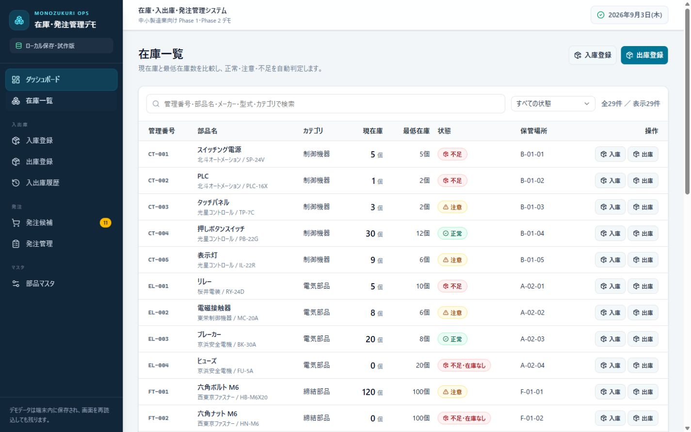
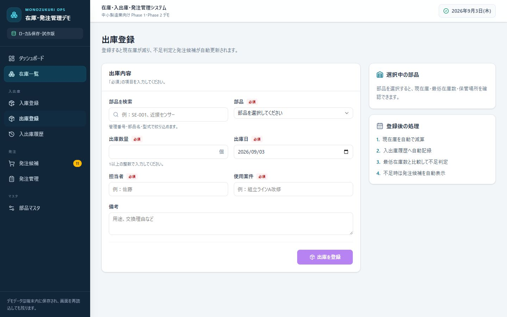
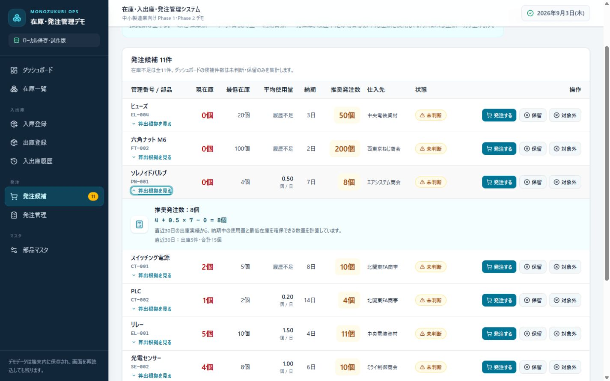
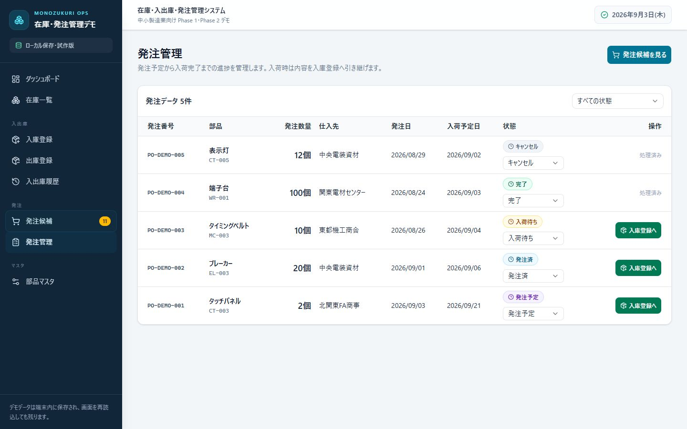

Before
Excelと紙を見ながら判断
- ・Excelを開いて現在庫を確認
- ・入出庫後に数量を手動で修正
- ・不足部品を担当者が確認
- ・発注対象を人が判断
- ・発注数量を手作業で計算
- ・発注状況を別ファイルで管理
Case Study / Prototype
入出庫から在庫不足の検出、発注判断までを効率化するWebシステム
社員5〜50名程度の中小製造業を想定し、Excelや紙で分かれている部品在庫・入出庫・発注管理を一つの流れに整理した試作です。完成品として販売するものではなく、業務改善の考え方を確認するためのデモとして制作しています。
Background
製造業では、部品在庫や発注状況をExcelや紙で管理し、入出庫後の数量修正、不足部品の確認、発注数量の計算を担当者が手作業で行っているケースがあります。
そこで、在庫を見るだけではなく、日々の入出庫から発注判断までをつなげると、どの作業を減らせるかが伝わるデモを作成しました。
このシステムをそのまま販売する想定ではありません。実際には、現在使っているExcel、管理単位、担当者の作業、承認方法などを確認し、必要な部分だけを企業ごとに調整します。
Before
After
Improvement Flow
近接センサーを例に、出庫登録から発注管理までの変化を確認できます。
現在庫10個
登録済みの在庫を確認
8個を出庫
使用案件と担当者も記録
現在庫2個へ
登録と同時に在庫を更新
在庫不足を判定
最低在庫数と自動比較
発注候補へ追加
不足部品を自動で抽出
推奨数量を計算
使用量・最低在庫・納期から算出
担当者が確認
発注・保留・対象外を選択
発注管理へ登録
入荷待ちから完了まで管理
Excelを開き、転記して、対象を探し、数量を計算する作業を減らす流れです。
Screens
すべて架空の部品・仕入先データを使った、今回制作した試作システムの実画面です。

在庫一覧
現在庫と最低在庫数を比較し、「正常・注意・不足」を文字でも表示します。

出庫登録
出庫内容を登録すると、現在庫・履歴・不足判定・発注候補をまとめて更新します。

在庫不足を自動検出・推奨発注数量を自動計算
数量だけでなく、どの在庫・使用量・納期から計算したかも確認できます。

発注状況管理
発注予定から入荷待ち、完了までを一覧で管理し、入庫登録へ引き継げます。
Functions
機能を増やすことより、担当者が日々行う確認・転記・判断を減らすことを優先しています。
01
部品マスタ、在庫一覧、入庫・出庫登録、入出庫履歴を一元化。登録した数量を現在庫へ自動反映します。
02
ダッシュボードで問題を把握し、最低在庫数を基準に不足部品を自動検出。発注候補と検索・絞り込みで必要な情報を探せます。
03
推奨発注数量、仕入先、納期をまとめ、発注状況を管理。部品データはCSVから一括登録できます。
Order Quantity Rule
今回の試作では「AIを使ったこと」ではなく、現場で根拠を確認でき、判断作業を減らせることを重視しました。
推奨発注数
最低在庫数 ＋ 平均1日使用量 × 納期日数 − 現在庫
出庫履歴が十分でない部品は、部品マスタの標準発注数を利用します。算出結果と理由を画面で確認してから、担当者が発注・保留・対象外を選びます。
Operation Demo
近接センサーを8個出庫し、現在庫が10個から2個へ変わるところから、在庫不足の検出、推奨発注数量の確認、発注管理への登録までを実画面で確認できます。
Scope
このデモは、完成品の在庫管理システムを販売することを目的としたものではありません。企業によって使用しているExcelや業務フローが異なるため、現在の作業内容を確認し、必要な部分だけをWeb・Excel・AIなどから適切な方法を選んで改善する想定です。
今回、認証・複雑な権限・外部システム連携・通知・AI需要予測などは実装していません。本格導入時には、管理する品目、担当者、承認手順、既存データなどを確認して設計します。
業務に合わせて検討すること
外部システム連携は今回の試作には含まず、必要性を確認したうえで設計を検討します。
在庫管理は業務改善の一例です。日常的に繰り返している次のような作業も、現在の方法から整理します。
すべてを自動化できると決めつけず、現在の資料と作業を確認して、改善しやすい範囲から検討します。
Contact
在庫管理に限らず、「毎回同じ作業をしている」「もっと簡単にできそう」という業務があれば、現在の作業内容を伺ったうえで改善方法を一緒に検討します。愛媛県内のご相談と、全国からのオンライン相談に対応しています。
現在の手作業について相談する相談内容が固まっていなくても、困っている作業から整理できます。